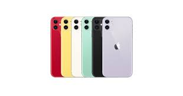

iPhone 13 Pro Max
El iPhone 13 Pro Max tiene un mejor chip, el procesador A15 Bionic,
que ha sido emparejado con una nueva tarjeta de procesamiento gráfico.
La batería del nuevo celular dura mucho más: su pantalla tiene una nueva tasa de
actualización y notch de menor tamaño. Además, su cámara tiene mejoras en el modo retrato,
un nuevo modo cinemático y mejor modo nocturno. Si algo es cierto es que tenemos al
menos dos años esperando la evolución del panel del iPhone, y tal vez Apple
aplica ese dicho de “más vale tarde que nunca”, porque finalmente incorporó
una tasa de actualización de la pantalla variable de hasta 120 Hz.
|

iPhone 12
Antes de que saliera a la venta, ya sabíamos que el iPhone 12 terminaría siendo incluido en esta lista.
Apple suele impresionar cada año con sus smartphones y sin necesidad de reinventar la industria de la telefonía móvil.
De hecho, bastaba con crear la evolución natural del iPhone 11. Esto es justo lo que es el iPhone 12.
Su gran cambio es el físico, ahora con unos laterales más angulares y con nuevos colores.
Las cámaras han sido mejoradas. La pantalla es ahora OLED y ofrece una experiencia más que decente.
Destaca sobre todo el rendimiento, que no presenta ningún problema ni incluso al jugar a juegos muy exigentes.
|

iPhone 11
En esta ocasión los dos modelos de gama más alta son el iPhone 11 Pro y el iPhone 11 Pro Max,
que llegan con una ambición renovada en el apartado fotográfico donde hay una gran novedad: pasamos de dos a tres sensores.
El diseño cambia precisamente por ese nuevo sistema de cámaras, pero además estamos
ante unos iPhone más potentes y versátiles que llegan con novedades de lo más interesantes.
El nuevo chip de Apple llega con un proceso litográfico mejorado de 7 nm con el que han logrado integrar
8.500 millones de transistores en un SoC que da protagonismo especial a las tareas de inteligencia artificial
con el Neural Engine y también a la eficiencia.
Apple prometen que esa eficiencia da resultados fantásticos con una autonomía que es 4 horas
mayor en el iPhone 11 Pro que en la del iPhone Xs, y que llega a ser de 5 horas más en el iPhone 11 Pro Max que en el iPhone Xs Max.
|